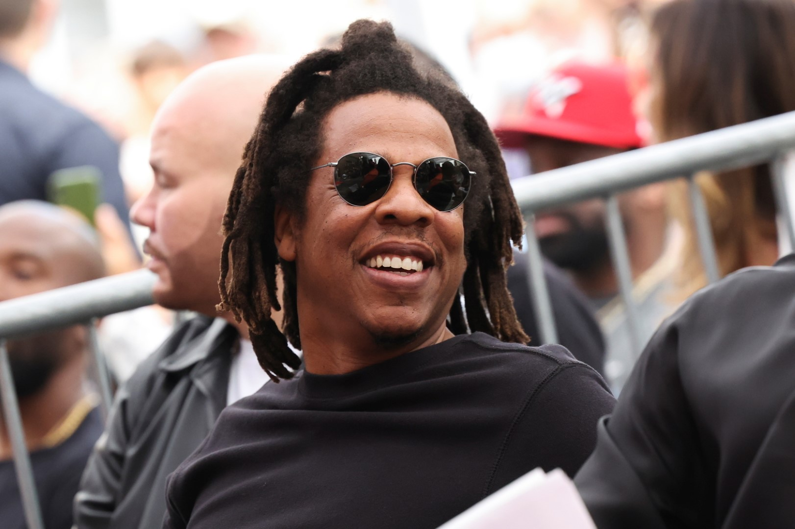

Krótka Historia Hip-Hop'u
31.01.2021 | 17:50 | J.G
Wstęp - Gatunek jest oparty na rapowaniu oraz muzyce disco, soul i funk. Na gatunek muzyczny hip-hopu składają się: rytmizowany styl muzyki o stałym BPM oraz rapowaniu, czyli rytmicznym wypowiadaniu tekstu. Styl muzyczny hip-hop jest jednym z filarów kultury hip-hopowej.
Muzyka hip-hop powstała, gdy DJ-e zaczęli tworzyć bity za pomocą zapętlania zapisów partii solowych, granych oryginalnie na perkusji na dwóch gramofonach, robiąc tak zwany sampling. Do zapętlanych fragmentów po jakimś czasie doszło rapowanie.
Hip-hop Początki - Hip-hop powstał w 1970 w Nowym Jorku w kulturze afroamerykańskiej młodzieży zamieszkałej w Bronksie. Zaczął stawać się popularny na tzw. „block parties” – improwizowanych spotkaniach muzyczno-tanecznych odbywających się na zewnątrz, które stały się wtedy popularne jako alternatywa dla niebezpiecznych dyskotek.
Lata 70 - Na imprezach ulicznych w dzielnicach („block parties”) DJ puszczał na gramofonie kilkusekundowe frazy rytmiczne z nagrań płytowych znanych piosenek, zapętlał je i łączył w dłuższe ciągi muzyczne przy użyciu drugiej kopii tego samego longplaya. Zapętlał dany fragment, przez co tworzył zupełnie nową kompozycję. Pierwsze wykonania muzyki hip-hop wykorzystywały techniki łączenia próbek dźwięku oraz rytm mechanicznej perkusji wzięty z pierwszych syntezatorów, które stały się wtedy powszechne. DJ łączył podczas wykonania technikę miksowania breaków oraz rapowany styl wokalny toasting, popularny wcześniej na Karaibach (Jamajka).
Pierwsi Twórcy -Hip-Hop'u
01.02.2021 | 12:43 | J.G
W 1979 roku utwór „Rapper's Delight” zespołu The Sugarhill Gang stał się pierwszym przebojem hip-hopowym, który zdobył popularność wśród szerokiej publiczności. Na przełomie lat 70. i 80. hip-hop jako gatunek muzyczny rozwinął się w bardziej złożony styl. Przed tym okresem w dużej mierze ograniczał swój zasięg do Stanów Zjednoczonych. Od 1980 roku zaczął się rozprzestrzeniać i stał się częścią sceny muzycznej w kilkudziesięciu innych krajach.
Pierwszym muzykiem, który przeniósł hip-hop z dyskotek na ulice i podwórka był DJ Kool Herc. Inni znani muzycy początkowego okresu rozwoju gatunku to: Grandmaster Flash and the Furious Five, Fab Five Freddy, Marley Marl, Afrika Bambaataa, Kool Moe Dee, Kurtis Blow, Doug E. Fresh, Whodini, Fat Boys, Warp 9 i Spoonie Gee.
Lata 80 - „Nowa szkoła” hip-hopu szczególnie słyszalna jest w nagraniach RUN-DMC i LL Cool J-a z lat 1983-1984. Złota era hip-hopu – nowatorska w porównaniu do lat 70. – to okres pomiędzy połową lat 80., a początkiem 90. Ważniejsi wykonawcy z tego okresu to Juice Crew, Public Enemy, Eric B. & Rakim, Boogie Down Productions, KRS-One, EPMD, Slick Rick, Beastie Boys, Kool G Rap, Big Daddy Kane, Ultramagnetic MCs, De La Soul oraz A Tribe Called Quest.
W latach 80 pojawił się także popularny styl gangsta rap jako podgatunek hip-hopu, często skupiający się na przemocy i przestępczym stylu życia ubogiej warstwy młodzieży śródmiejskiej. Schoolly D, N.W.A, Ice-T, Ice Cube oraz Geto Boys to muzycy najczęściej kojarzeni z powstaniem tego podgatunku. Znani byli z łączenia komentarza politycznego i społecznego w stylu politycznego hip-hopu z wątkami opowieści kryminalnych i przestępczych.
Lata 90 - Style West Coast hip-hop i G-Funk zdominowały główny nurt hip-hopu na początku lat 90. East Coast hip-hop w okresie od początku do połowy lat 90. został zdominowany przez Afrocentric jazz rap i hip hop alternatywny z Native Tongues, a także hardcore rap, wykonywany m.in. przez Nas-a, Wu-Tang Clan, The Notorious B.I.G., czy zespół Onyx. W latach 90. hip-hop zaczął się rozdzielać na amerykańskiej krajowej scenie na style regionalne, takie jak Southern rap i Atlanta hip hop. Jednocześnie wciąż nawiązywał do innych gatunków muzyki popularnej, czego przykładem jest neo soul.
Biznes Budowany na Hip-Hop'ie
Jednak od 2008 roku sprzedaż muzyki hip-hop w Stanach Zjednoczonych zaczęła lekko słabnąć. W połowie lat 00. XXI wieku stałe miejsce w głównym nurcie znalazł hip-hop alternatywny, częściowo ze względu na sukces takich artystów, jak OutKast i Kanye West.
Hip-Hop stał się najlepiej sprzedającym gatunkiem muzycznym w połowie lat 90., a największą sprzedaż zanotowano w 1999 roku.Po 2000 roku zbliżył się mocno do głównego nurtu muzyki pop. Sukces zaczęły zdobywać style, takie jak crunk, który skupiał się na wykonywaniu utworów krzykiem.
Po 2010 roku - Wraz z wydaniem "My Beautiful Dark Twisted Fantasy" Kanyego Westa, hip-hop zaczął być jeszcze szerzej odbierany jako gatunek pełen artyzmu i możliwości przekazania wartości odmiennych od tych utożsamianych z gangsta rapem i trapem. Album ten zmienił także postrzeganie gatunku przez producentów, jako że Kanye pokazał zupełnie nowe podejście do samplowania oraz produkcji głosu. Powszechne zaczęło być używanie programu auto-tune.
Nowe Pokolenie Hip-Hop'u
02.02.2021 | 01:08 | J.G
Druga dekada XXI wieku niesie ze sobą również rozwój rapu zaangażowanego społecznie. Artyści tacy jak Kendrick Lamar, J.Cole czy Joyner Lucas w swoich utworach dotykają spraw mniejszości afroamerykańskiej w Stanach Zjednoczonych, a piosenka "Alright" Kendricka stała się wręcz hymnem stowarzyszenia Black Lives Matter.

W 2018 roku magazyn "Rolling Stone" oznajmił, że po raz pierwszy w historii, w roku 2017 muzyka Rap przebiła wszystkie inne gatunki, jeśli chodzi o sprzedaż i streaming. Ta tendencja pozostała stabilna przez cały 2018 rok i 2019. Hip-hop rozprzestrzeniał się też w wielu innych krajach poza USA i w drugiej dekadzie XXI wieku przy udziale serwisów streamingowych czy też portali, na które można dowolnie dodawać własne piosenki, takich jak SoundCloud czy YouTube, Hip-hop jest najczęściej tworzonym gatunkiem muzycznym na całym świecie.
Jay-Z - Sława i Zachwyt
02.02.2021 | 08:59 | J.G
Jay-Z - Shawn Corey Carter (ur. 4 grudnia 1969) – amerykański raper i przedsiębiorca.
Uważany za jednego z najważniejszych artystów hip-hopowych wszech czasów oraz jednego z „najlepszych artystów dekady 2000–2009” według redakcji Billboardu. Uznany został też piątym najlepszym artystą solowym oraz czwartym najlepszym raperem na listach sporządzanych przez magazyn. Dwa jego albumy, Reasonable Doubt (1996) i The Blueprint (2001), na przestrzeni lat zyskały status klasyków gatunku; oba zostały umieszczone na liście 500 albumów wszech czasów magazynu Rolling Stone, zajmując kolejno: 248. i 464. miejsce. Jako raper pobił rekord Elvisa Presleya i stał się artystą z największą liczbą albumów w historii, które zadebiutowały na szczycie Billboard 200. Jego albumy rozeszły się w niemalże 50 milionach egzemplarzy, zaś sam artysta zdobył 21 nagród Grammy.
Współwłaściciel The 40/40 Club i drużyny NBA Brooklyn Nets, a także kreator linii odzieżowej Rocawear. Były dyrektor generalny Def Jam Recordings, jeden z trzech założycieli Roc-A-Fella Records oraz założyciel Roc Nation. Uznawany za jednego z najlepiej zarabiających artystów oraz przedsiębiorców w Stanach Zjednoczonych, z majątkiem szacowanym na ponad miliard dolarów. W 2010 Forbes umieścił go na 15. miejscu listy najbardziej wpływowych postaci show-biznesu, z rocznym zarobkiem w wysokości 63 milionów dolarów. Według prognoz magazynu, w 2015 mógł znaleźć się na liście Forbes 400, prezentującej 400 najbogatszych postaci w Stanach Zjednoczonych.
Wczesne życie - Wywodzi się z nowojorskiego Brooklynu, gdzie w Marcy Houses wychowywała go matka, Gloria Carter, gdyż ojciec opuścił rodzinę. W wieku 12 lat postrzelił swojego brata w ramię, gdyż ten chciał mu ukraść biżuterię.
Uczęszczał do Eli Whitney High School z innym raperem, AZ, dopóki szkoła nie została zamknięta. Kontynuował naukę w George Westinghouse Career and Technical Education High School, gdzie poznał Notoriousa B.I.G. oraz Busta Rhymesa, i Trenton Central High School w Trenton w stanie New Jersey, której nie ukończył. W jego tekstach znajdują się odniesienia, jakoby w młodości miał zajmować się handlem kokainą.
Jay-Z przyznał, że przełomowym okresem w jego życiu był czas, gdy, uczęszczając do szóstej klasy, odkrył w sobie miłość do słów: „Wychowałem się na Brooklynie. Klasy pękały w szwach. W szóstej klasie mieliśmy nauczycielkę, pannę Lowden. Chyba coś we mnie dostrzegła, bo poświęciła mi uwagę i przekazała miłość do słów. Zabawne, jak niewiele trzeba, wystarczy trochę uwagi. Zabrała nas też na wycieczkę do swojego domu. Wcześniej całym moim światem była dzielnica. Niczego więcej nie widziałem. A tego dnia zobaczyłem całkiem inny świat, który pobudził moją wyobraźnię. To były drobiazgi. W lodówce miała dystrybutor do lodu – wiecie, taki że się naciska i wylatuje woda z lodem. Byłem tym ogromnie zadziwiony. Mówiłem sobie: chcę mieć coś takiego.” Następnie dodał: „Nauczycielka w szóstej klasie powiedziała: 'Wiesz co, bystrzak z ciebie’. I ja jej uwierzyłem. Powiedziałem sobie: 'Przecież bystrzak ze mnie, nie?'. Ona dała mi szansę, zapaliła iskierkę w mojej głowie.”
Słyszany jest na kilku utworach Jaz-O z przełomu lat 80. i 90., w tym „The Originators” i „Hawaiian Sophie”. Jay-Z brał również udział w kilku rapowych bitwach z LL Cool J, które wygrał, na początku lat 90. Artysta stał się po raz pierwszy znany szerokiej publiczności dzięki gościnnemu udziałowi w utworze „Show and Prove” Big Daddy’ego Kane’a. Jay-Z uznawany był ówcześnie za jego hypemana, jednak sam Kane wytłumaczył, że nie wypełniał on roli tradycyjnego hypemana, tylko „pojawiał się na scenie w roli cameo. Kiedy schodziłem ze sceny, żeby zmienić strój Jay-Z i Positive K freestyle’owali, dopóki nie wróciłem.” Następnie Jay-Z wziął udział w nagraniu „Da Graveyard” Big L oraz „Time to Build” Mic Geronimo. Jego pierwszym oficjalnym singlem był „I Can’t Get With That”, do którego nakręcono również wideoklip.
Jaj-Z - Działalność Biznesowa
02.02.2021 | 9:34 | J.G
Jest założycielem marek odzieżowych Rocawear i Damon Dash. Pierwsza z nich składa się z linii ubrań i akcesoriów dla mężczyzn, kobiet i dzieci. W marcu 2007 sprzedał Iconix Brand Group prawa do Rocawear za 204 miliony dolarów. Wciąż posiada jednak udziały w firmie i pozostaje odpowiedzialny za licencjonowanie, marketing oraz promocję produktów sygnowanych przez markę. Jest współwłaścicielem The 40/40 Club, sieci barów sportowych w Nowym Jorku, Atlantic City i Chicago, a plany zakładają otwarcie kolejnych lokali: w Tokio i Singapurze.
W 2005 wraz z Willem Smithem i jego żoną zainwestowali w linię produktów kosmetycznych Carol’s Daughter. Jest jednym z dyrektorów marki Budweiser Select i współpracuje z firmą w dziedzinie programów marketingu strategicznego oraz kreatywnego. Odpowiada również za promocję, sprawując kontrolę nad reklamami marki. Ma udziały w drużynie NBA Brooklyn Nets, wyceniane na 4.5 miliona dolarów. W 2005 pojawiły się informacje, że planuje zainwestować w angielski klub piłkarski Arsenal FC, jednak sam zainteresowany nie podjął żadnych kroków w tym celu. Pięć lat później, w 2010 przyznał, że poważnie myśli o zakupie udziałów w klubie.
W kwietniu 2008 podpisał z Live Nation dziesięcioletni kontrakt, opiewający na kwotę 150 milionów dolarów.Korporacja umożliwiła mu założenie własnej wytwórni Roc Nation, a także zobowiązała się do finansowania jego koncertów, tras, wszelkiej działalności rozrywkowej oraz przyszłych nagrań.
We wrześniu 2010 Steve Forbes, założyciel magazynu Forbes, przeprowadził wspólny wywiad z Jayem-Z oraz Warrenem Buffettem, miliarderem, uważanym za najskuteczniejszego inwestora wszech czasów. 16 listopada 2010 premierę miał pamiętnik Jaya-Z pt. „Decode”. W listopadzie 2014 kupił markę Armand de Brignac, która zajmuje się produkcją szampana.